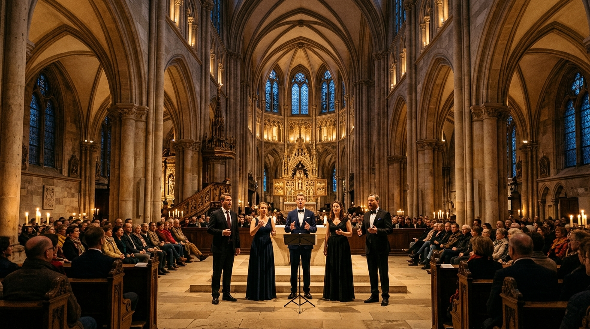

Willkommen bei Pentavox Regensburg
Fünf Stimmen. Ein reiner Domklang.
Ausgebildet bei den Regensburger Domspatzen. Wir schenken Ihrer Trauung in Bayern einen 5-stimmigen A-cappella-Klang, der tief berührt.
Exklusiver Vokalsatz für die Hochzeitssaison 2026 / 2027
Reiner Naturgesang ohne elektronische Verzerrung. Jede Gesangsstimme präzise ausgebildet an der geschichtsträchtigsten Chorschule Europas.
Signature Feature · Interaktive Polyphonie
Das Pentavox Polyphonie-Pult
Erleben Sie die Transparenz unseres Satzgesangs: Isolieren Sie einzelne Gesangsstimmen (Solo) oder schalten Sie Stimmlagen stumm (Mute), um das harmonische Zusammenspiel der Regensburger Domspatzen-Schule hautnah zu hören.
Sopran
Tonumfang: C4 – A5Strahlende, glockenreine Melodieführung, die den Kirchenraum mit lichter Klarheit erfüllt.
Alt
Tonumfang: G3 – E5Samtig-warme Mittelstimme, die dem Satz seine intime Tiefe und emotionale Wärme verleiht.
Tenor
Tonumfang: C3 – A4Geschmeidige Höhenresonanz mit meisterlicher Linienführung nach klassischer Domchortradition.
Bariton
Tonumfang: G2 – E4Kerniges harmonisches Fundament; verbindet die Oberstimmen organisch mit dem Bass.
Bass
Tonumfang: E2 – C4Tiefes, sonores Kathedral-Fundament, das jede Phrase trägt und den Raum physisch vibrieren lässt.
Original-Wortlaut · Trauung im Dom zu Regensburg
„Gänsehaut, als alle 5 Stimmen einstimmten. Unsere Gäste sprechen heute noch vom Einzug zur Trauung!“
Transparente Meister-Begleitung
Die 3 Pentavox Klang-Pakete
Jedes unserer drei Pakete beinhaltet die vollzählige 5-Stimmen-Besetzung und die persönliche Einstudierung Ihres individuellen Wunschsongs – meisterlich arrangiert ohne Aufpreis.
Trauung Pur
Fokussierter Gänsehaut-Klang während der feierlichen kirchlichen, standesamtlichen oder freien Trauzeremonie.
- ✓ 3–4 ausgewählte Lieder während der Zeremonie (Einzug, Ringwechsel, Trausegen, Auszug)
- ✓ Vollständiges 5-stimmiges Vokalensemble (Sopran, Alt, Tenor, Bariton, Bass)
- ✓ 1 maßgeschneidert 5-stimmig einstudiertes Wunschlied
- ✓ Musikalische Feinabstimmung mit Pfarrer, Standesbeamtem oder freiem Trauredner
- ✓ Eintreffen & Einpegeln 60 Minuten vor Zeremoniebeginn
Trauung & Empfang
Die ideale Symbiose: Sakrale Erhabenheit in der Kirche und beschwingte, mitreißende A-cappella-Unterhaltung beim Sektempfang.
- ✓ Vollständige Zeremonie (3–4 Wunschlieder)
- ✓ 1,5 Stunden Live-Set beim Sektempfang (Pop-Klassiker, Swing & A-cappella Hits)
- ✓ Inklusive 1 maßgeschneidertem 5-Stimmen-Wunscharrangement
- ✓ Fließender Übergang von feierlicher Andacht zu fröhlicher Feststimmung
- ✓ 100 % autark ohne Stromkabel – überall im Schlossgarten oder Innenhof spielbar
Der Exklusivtag
Die vollendete Ganztagsbegleitung: Von der ersten Träne beim Ja-Wort bis zum edlen Akustik-Klangteppich beim Festdinner.
- ✓ Feierliche Trauzeremonie mit individuellem Wunschsong
- ✓ Sektempfang (1,5 Stunden beschwingtes Open-Air-Set)
- ✓ Stilvoller Klangteppich beim Festdinner (dezente Jazz-, Pop- & Madrigal-Sets zwischen den Gängen)
- ✓ Bis zu 2 eigens einstudierte Wunschlieder
- ✓ Persönliche musikalische Gesamtleitung vor Ort
Kirchliche & Freie Trauung
Gänsehaut-Satzgesang beim Einzug, Ringwechsel und Segen – sakral, erhaben und zutiefst bewegend.
Standesamtliche Trauung
Verleiht dem behördlichen Rahmen eine unverwechselbare Festlichkeit in 20–30 intimen Minuten.
Sektempfang & Festessen
Unbeschwerter A-cappella-Swing und Pop-Harmonien, die Ihre Hochzeitsgesellschaft sofort verzaubern.
Galas & Weihnachtskonzerte
Konzertante Festprogramme auf allerhöchstem Niveau für Firmenjubiläen, Kulturtage und Adventskonzerte.
Musikalischer Schatz
Repertoire & Hörproben
Von sakraler Polyphonie bis zu modernen Liebesballaden. Klicken Sie auf ein Werk, um es direkt im Polyphonie-Pult abzuspielen.
Hallelujah
Leonard Cohen · Arr. Pentatonix & PentavoxPerfect
Ed Sheeran · 5-stimmiger SatzgesangDenn er hat seinen Engeln befohlen
Felix Mendelssohn Bartholdy · Psalm 91Can’t Help Falling in Love
Elvis Presley · Feierlicher TrausatzUnverbindliche Vorab-Einschätzung
Welchen Moment dürfen wir für Sie unvergänglich machen?
Für die Hochzeitssaison 2026/2027: Samstage im Dom & Raum Bayern nur noch begrenzt verfügbar. In 3 einfachen Schritten Termin anfragen – wir antworten binnen 24 Stunden.
Domstadt Regensburg
Standort · Domplatz 1
Heimat des Regensburger Doms St. Peter und Probenort unseres Quintetts. Von hier aus reisen wir zu Trauungen in ganz Bayern.